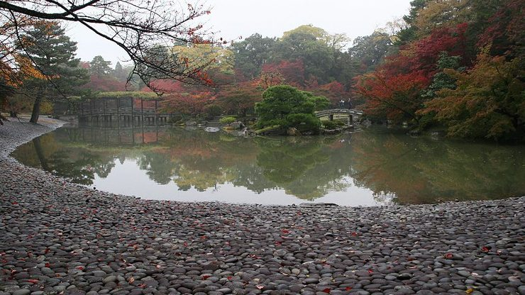
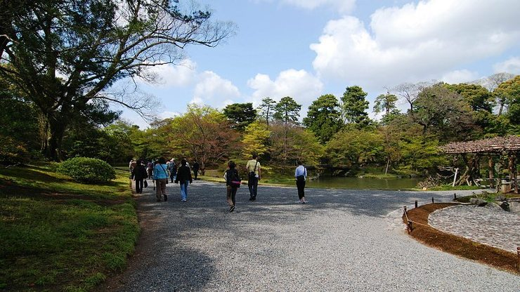

Sento Imperial Palace
仙洞御所
Sento Imperial Palace (仙洞御所, Sentō Gosho) is a secondary palace complex across from the Kyoto Imperial Palace in Kyoto Imperial Park. It was built in 1630 as the retirement palace of Emperor Gomizuno and became the palace for subsequent retired emperors.
The original palace buildings burned down in 1854 and were not rebuilt. Instead, Omiya Palace was constructed on the Sento grounds in 1867 and now serves as the lodging place for the current prince and princess during their visits to Kyoto.
Visiting Sento Imperial Palace requires joining a free tour by the Imperial Household Agency. The tour leads through the palace garden, which is comprised of the North Pond and South Pond areas, and is a beautiful example of a strolling garden.
Tours of Sento Palace last about one hour and are conducted in Japanese only. Audio guides in several foreign languages are available. None of the palace buildings are entered, however, some of the structures, such as the Seikatei teahouse, are left open so that visitors can see inside and get an impression of imperial design and style.
